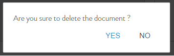

Collection > Delete Document
Click on
Delete
icon from the listed documents. See Figure below.
Click
YES
/
NO
to store or discard the changes respectively. See Figure below.

The documents stand deleted.
previous
next